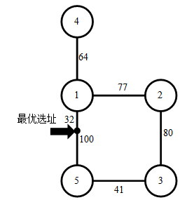

第一行包含一个整数N，表示城市C中的建筑和道路数目。
接下来N行，每行3个整数，Ai，Bi，Li（1≤i≤N；Li>0），表示一条道路连接了建筑Ai与Bi，其长度为Li 。
小T打算在城市C开设一家外送快餐店。送餐到某一个地点的时间与外卖店到该地点之间最短路径长度是成正比的，小T希望快餐店的地址选在离最远的顾客距离最近的地方。 快餐店的顾客分布在城市C的N 个建筑中，这N 个建筑通过恰好N 条双向道路连接起来，不存在任何两条道路连接了相同的两个建筑。任意两个建筑之间至少存在一条由双向道路连接而成的路径。小T的快餐店可以开设在任一建筑中，也可以开设在任意一条道路的某个位置上（该位置与道路两端的建筑的距离不一定是整数）。 现给定城市C的地图（道路分布及其长度），请找出最佳的快餐店选址，输出其与最远的顾客之间的距离。
第一行包含一个整数N，表示城市C中的建筑和道路数目。
接下来N行，每行3个整数，Ai，Bi，Li（1≤i≤N；Li>0），表示一条道路连接了建筑Ai与Bi，其长度为Li 。
仅包含一个实数，四舍五入保留恰好一位小数，表示最佳快餐店选址距离最远用户的距离。
注意：你的结果必须恰好有一位小数，小数位数不正确不得分。
1 2 1
1 4 2
1 3 2
2 4 1
2.0
数据范围
对于 10%的数据，N<=80,Li=1；
对于 30%的数据，N<=600，Li<=100；
对于 60% 的数据，N<=2000，Li<=10^9；
对于 100% 的数据，N<=10^5，Li<=10^9